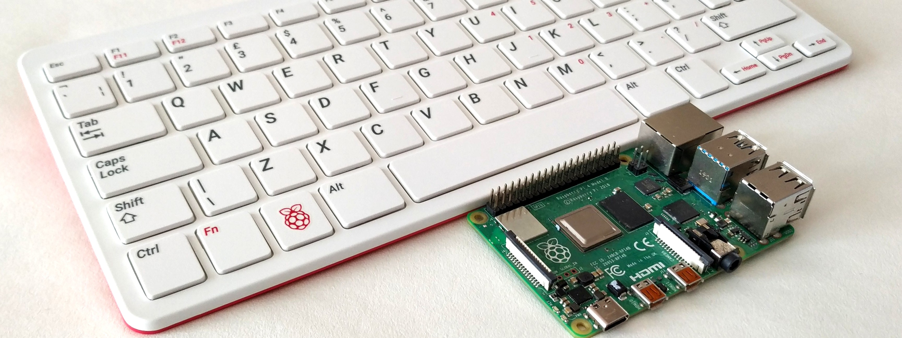

Projet Rasberry
Le projet avait pour but d'installer et de configurer un système de gestion de base de données (SGBD) sur un Raspberry Pi, un petit ordinateur monocarte équipé d'un processeur ARM. Pour cela, nous avons d'utiliser Raspberry Pi 400, une carte SD avec adaptateur, un câble HDMI et un câble réseau avec adaptateur. Le projet s'est déroulé en trois étapes principales : d'abord, l'installation d'un système d'exploitation (OS), ensuite la création d'une connexion SSH, et enfin l' installation et la configuration du SGBD. Le système d'exploitation choisi était Raspberry Pi OS, et la connexion SSH devait être configurée manuellement. Le SGBD installé était MariaDB, et il fallait créer et configurer une base de données ainsi que les utilisateurs nécessaires. Enfin, le bon fonctionnement de l'installation devait être vérifié à l'aide d'un script Python fourni. Ce projet a permis de développer des compétences en configuration de systèmes, en gestion de bases de données et en résolution de problèmes techniques .